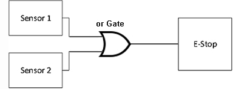

- 00000018WIA30ADB030GYZ
- id_123734561.5
- Feb 9, 2022, 6:09:45 PM
Leak Detection Theory and Troubleshooting for PET/MR
Theory
The PET/MR leak detection system consists of two leak sensors; one is located in the bore between the PET/MR Insert and Gradient Coil and the other is at the rear of the magnet between the edge of the magnet and the floor mounting. The two sensors send a signal through the logic circuitry in the leak detection interface box to control the E-stop in the event of a leak.

The table below shows when the E-Stop will be triggered. The default status, No Leak, for the sensors is 1, which will not trigger the E-Stop if the sensors are working correctly. When either or both of the sensors detect a leak, the logic will switch to 0 and trigger the E-Stop.
|
Sensor 1 (1 = No Leak, 0 = Leak) |
Sensor 2 (1 = No Leak, 0 = Leak) |
Sensors 1 and
2 (1 = No E-Stop, 0 = E-Stop) |
| 0 | 0 | 0 |
| 0 | 1 | 0 |
| 1 | 0 | 0 |
| 1 | 1 | 1 |
Troubleshooting
If an E-Stop event occurs due to a change in the leak detection status, there are two possible failure modes that could be the cause:
-
Leak detected
-
Bad sensor
The LED state is not reliable for a bad sensor, and should not be used to determine if the sensor detected a leak.
Determining Cause for E-Stop
-
Locate the connections from the sensors on the side of the RF Hub.
-
To determine if Sensor 1 is causing an E-Stop:
-
Disconnect Sensor 1, and short Pins 1 and 3 together on the leak detection interface box, which places that logic input into the No Leak default state.
-
Push the EMO Reset button on the PGR and PET Cabinets. If E-Stop does not occur, Sensor 1 is causing the E-Stop.
-
-
If an E-Stop occurs, reconnect Sensor 1, and proceed as follows:
-
Disconnect Sensor 2, and short Pins 1 and 3 together on the leak detection interface box, which places that logic input into the No Leak default state.
-
Push the EMO Reset button on the PGR and PET Cabinets. If E-Stop does not occur, Sensor 2 is causing the E-Stop.
-
-
If an E-Stop occurs, disconnect both sensors, and short Pins 1 and 3 together for each sensor input.
-
If an E-Stop does not occur, both sensors are causing the E-Stop.
-
If an E-Stop still occurs, proceed to PET/MR E-Stop Bypass Troubleshooting.
-
Solution
-
Remove the sensor triggering the E-Stop from the system.
-
Test the performance of the sensor while it is connected to the interface box:
-
Wipe off the sensor until it is completely dry; LED should be green and the system should not detect a leak.
-
Place a damp cloth on the outside of the sensor; LED should be red and the system should detect a leak.
-
If the sensor passes the performance test, and it is in good condition, a leak exists somewhere in the system and will need to be found.
-
If the sensor does not pass the performance test, is in poor condition, and there is no leak in the system, replace the sensor.
-